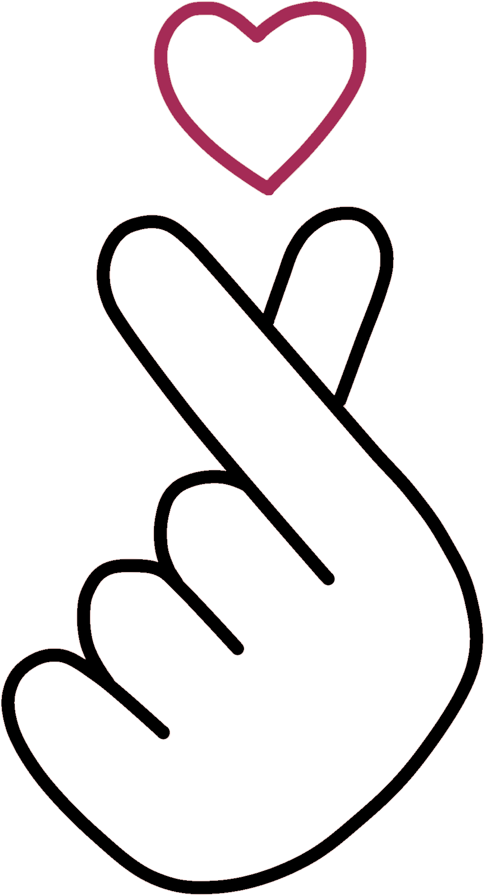

Tu Drama

A China possui uma rica herança cultural que se reflete em seus sistemas educacionais. Com uma história que remonta a milênios, a educação chinesa valoriza o aprendizado contínuo e a excelência acadêmica. O sistema educacional da China é conhecido por sua rigorosidade e alta competitividade, com um foco significativo em matemática, ciências e tecnologias. A cultura chinesa também enfatiza a importância do respeito aos professores e ao conhecimento, o que tem contribuído para o desenvolvimento de uma sociedade bem-educada e inovadora.
A Coreia do Sul é famosa por seu sistema educacional altamente eficaz e competitivo. O país coloca grande ênfase na educação como meio de progresso social e econômico. Desde cedo, os estudantes coreanos são encorajados a se dedicar intensamente aos estudos, muitas vezes frequentando escolas de reforço após o horário escolar. A Coreia do Sul tem um dos mais altos índices de educação superior do mundo e é um líder global em tecnologia e inovação. A cultura do aprendizado e o respeito pela educação são profundamente enraizados na sociedade coreana.
O Japão tem um sistema educacional que combina rigor acadêmico com o desenvolvimento de habilidades sociais e culturais. A educação japonesa é conhecida por seu enfoque na disciplina, ética de trabalho e cooperação. Os estudantes japoneses passam por um sistema educacional bem estruturado que inclui escolas primárias, secundárias e universidades de renome mundial. Além do currículo acadêmico, há uma forte ênfase na educação moral, educação física e atividades extracurriculares, que ajudam a formar cidadãos bem-arredondados e preparados para contribuir com a sociedade.